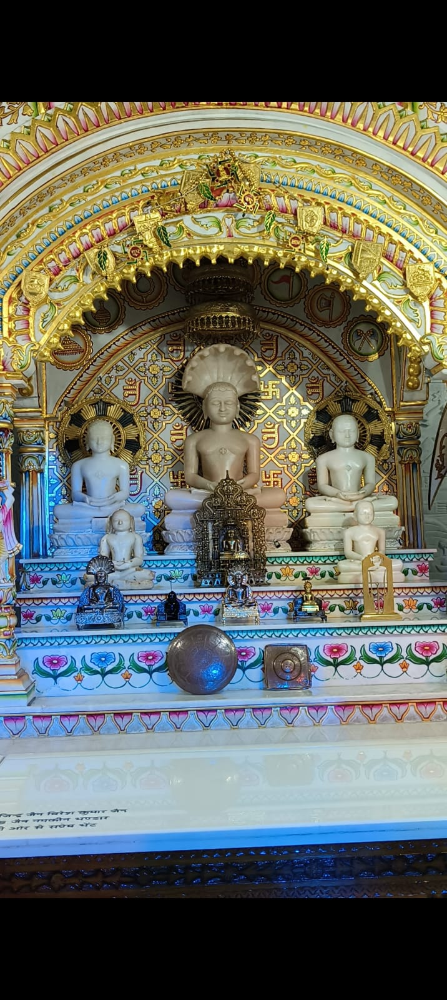

Sunday Pathshala
Every Sunday • 8:00 AM – 9:00 AM • Karnal
View details →JIN SHASAN PRABHAVNA SANGH • KARNAL
Discover. Connect. Learn. Experience. Participate. Serve.
A community space for Jain darshan, yatras, knowledge, bhakti, events and seva — created to bring young Jains together.

WHO WE ARE
Jain Youth Karnal is the public-facing youth identity of Jin Shasan Prabhavna Sangh Karnal. The initiative brings together young Jains through spirituality, Jain knowledge, temple visits, yatras, bhakti, community events and seva.
The website is designed to become a living archive and a community gateway — not simply an information page.
LATEST ANNOUNCEMENTS
A dedicated space for new yatra announcements, Pathshala updates, events, seva notices and important community information.
Every Sunday • 8:00 AM – 9:00 AM • Karnal
View details →4 October 2026 • Trilok Teerth Dham and other Jain temples in Badegaon.
View trip →Jai Jinendra🙏
If there’s enough interest, let’s plan our November Yatra to Kundalpur for Bade Baba’s Abhishek & Prakshal. 🙏
ITINERARY:
21 November (Saturday, Approx. 2:00 PM): Departure from Karnal to Nizamudin
22 Nov. (Sunday, Approx. 5:00 AM): Arrival at Kundalpur
A little time to rest, freshen up & prepare for your spiritual morning. ✨
Bhaktamar Vidhaan: From 7:30 AM
Prakshaal Time: 9:00 AM to 11:00 AM
Return from Kundalpur: 22 Nov. (Sunday, approx. 8:00 PM)
Arrival at Nizamudin: 23 Nov. (Monday, 8:00 AM)